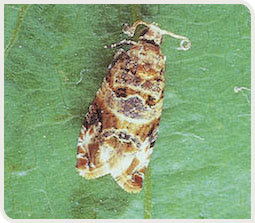
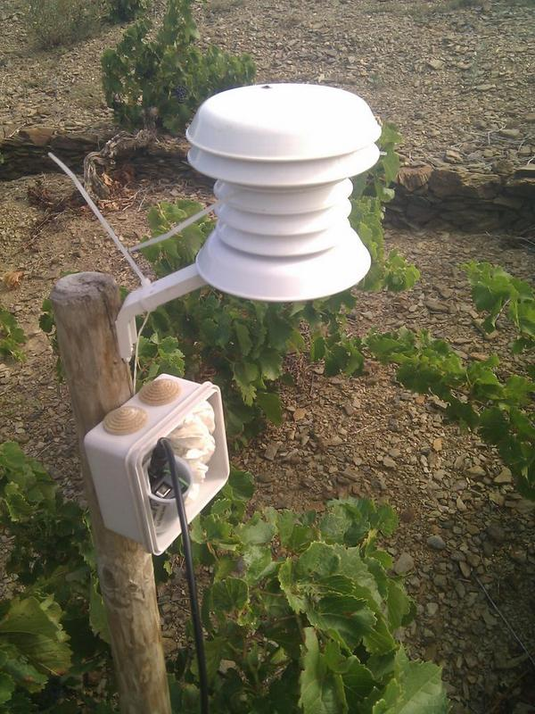
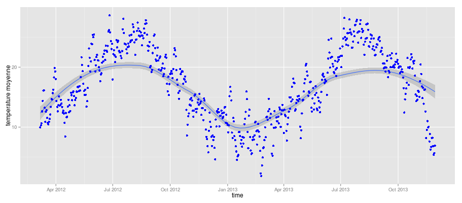
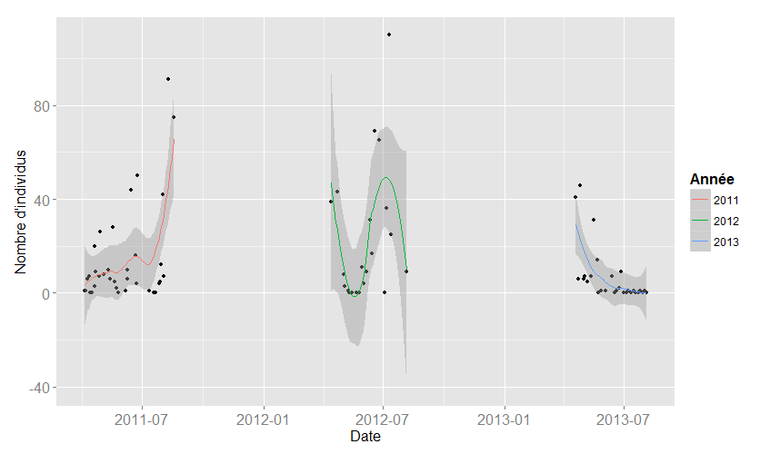
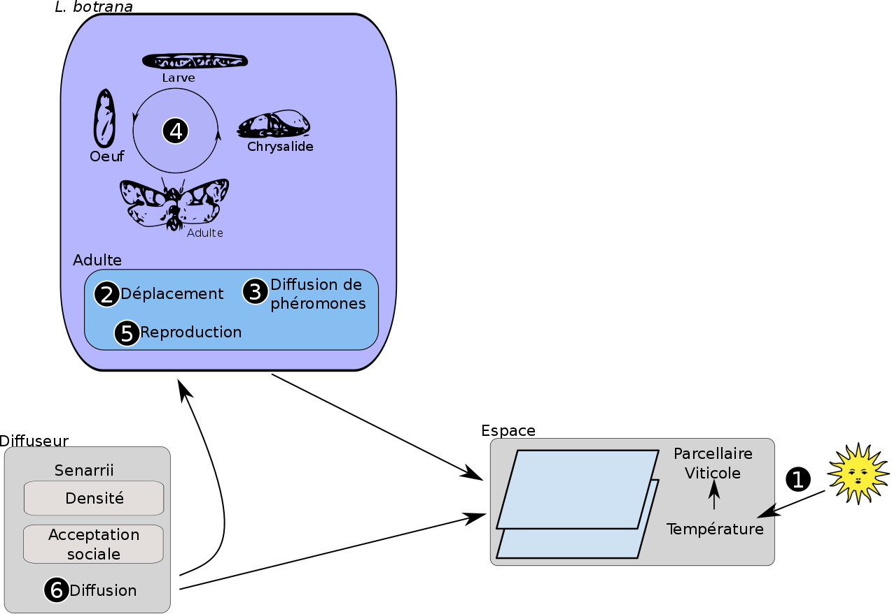
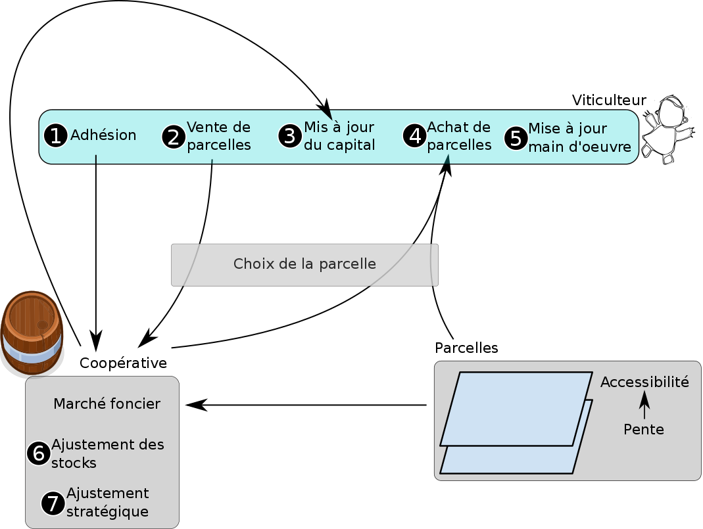
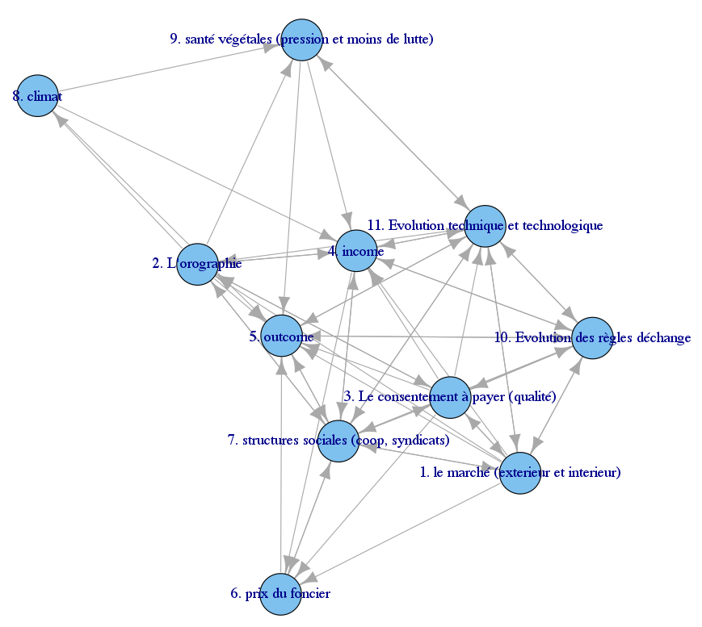

Viticulture de forte pente
Prospective
Par Etienne Delay doctorant GEOLAB/ @ElCep Sous la direction de Eric Rouvellac, Philippe Allée et Nicolas Becu
Table ronde prospective - 18 mars 2015 lieu : Syndicat des vignobles de la côte Vermeille : Mas Reig
Introduction
Une thèse depuis 2011 :“Evolutions et Prospectives paysagères des territoires viticoles de fortes pentes”
l'objectif est d'étudier par la modélisation certains des grands enjeux des territoires viticoles à fortes pentes et leurs évolutions probable dans le futur
Méthodologie
Une approche empirique pour comprendre les interactions sociales et leurs influences sur le territoire basée sur :
- Entretiens avec les acteurs
- Observations et relevés de terrain
- Réalisation de plusieurs modèles chacun axés sur une thématique
Et la formalisation de ces interactions sous forme de modèles
 Le vignoble de Banyuls-sur-Mer
Le vignoble de Banyuls-sur-Mer
Une constellation de modèles
Au fur et à mesure des rencontres avec les viticulteurs et la communauté scientifique, nous avons abordé plusieurs questions qui se sont traduites par différents modèles
- A l'échelle régionnale : la place du marché dans l'économie viticole et ses influences sur les formes paysagères
- A l'échelle communale : recherche des leviers des dynamiques paysagères (pentes, distances, climat, etc)
- A l'échelle parcellaire : stratégies de lutte antiparasitique... exemple de l'eudémis
Pour ouvrir la discussion
Nous vous en présenterons deux :
- A l'échelle parcellaire : la lutte contre l'eudémis
- A l'échelle communale: l'influence de la coopérative
CeLL
Confusion Lobesia Landscape
- Les acteurs : les individus d'eudémis, les diffuseurs de phéromones
- L'échelle spatiale : îlots de culture (groupes de parcelles)
- L'échelle temporelle : la journée
Questions :
La confusion virtuelle fonctionne-t-elle comme la confusion réelle?
Source : Bayer
Des parcelles témoins
à Collioure depuis 1999
Le cycle biologique
Le développement des lobesia est dépendant de la température
Une littérature abondante : Bière et al. 1998, Roditakis et al. 2001, Milonas et al. 2001, etc.
Depuis 2012, 11 parcelles sont équipées de capteurs de températures (relevées toutes les 10 min), grâce à l'ANR TerViClim
Des observations de terrain
Théoriquement 4 générations de lobesia par an. C'est généralement sur la 3èmegénération que la récolte est sensible (grappe en formation)
Comment fonctionne le modèle
Le scénario de la situation actuelle sans confusion
|
|
|
|
Exploration des méthodes de lutte
À vous de jouer !
Les leviers sur lesquels vous pouvez jouer pour tester de nouveaux scénarios de lutte
Les variables
|
Les principaux résultats
CiVIsMe
Coopération VIticole et système de Montagne
- Les acteurs : les viticulteurs et la coopérative
- L'échelle spatiale: communale
- L'échelle temporelle : l'année
Questions :
Quels sont les effets (sociaux, spatiaux, etc) de la coopération sur un territoire viticole de fortes pentes
Les données
Plusieurs sources de données pour ce modèle
- Des entretiens
- Des données sur le parcellaire
- Des données sur les échanges fonciers
Comment fonctionne le modèle
Le scénario de la situation actuelle
|
|
|
Et si ...
...la coopérative disparaissait ?
À vous de jouer !
Les leviers sur lesquels vous pouvez jouer pour tester de nouveau scénarios par rapport à la coopérative
Les variables
|
Les principaux résultats
La prospective stratégique pour le territoire
«L'avenir ne doit pas être envisagé comme une ligne unique [...]: l'avenir est multiple et indéterminé. La construction de l'avenir s'explique autant par l'action humaine que par le jeu du déterminisme»
Michel Godet, 1985
L'objet de l'exercice de prospective consiste à imaginer des futurs possibles et à forcer leur réalisation.
Quel futur pour la viticulture de forte pente?
Chercher les variables structurales du système! Quelles sont les contraintes de la viticulture de forte pente?
|
|
Comment ces contraintes interagissent?
Par exemple :
Un macro-scenario pour la viticulture de forte pente ?
Merci de votre aide

Vous pouvez retrouver cette présentation sur GitHub, à l'adresse : http://unil.im/PuklZ, ou en flashant le QRcode suivant !
réalisée avec reveal.js crédit photo : Thomas Misnyovszki on Flickr